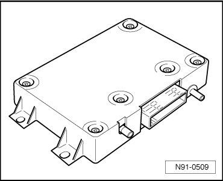
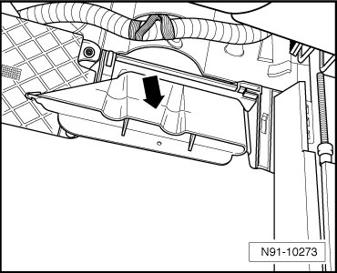
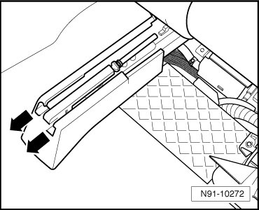
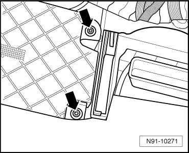
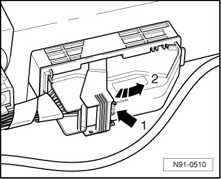
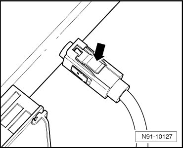
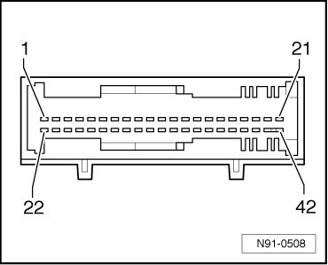

Telematics Control Module
Telematics Control Module

• Before removing Telematics Control Module, there is the possibility of reading out coding and reading coding in again into new Telematics Control Module after replacing, while using Vehicle Diagnosis, Testing and Information System (VAS 5051) or Vehicle Diagnosis and Service System (VAS 5052) with function " J499 - replacing Telematics Control Module".
• After replacing, control module needs to be reconfigured via " OnStar" Telematics call center.
Removing
Before starting repair work, batteries must be disconnected!
- Bring right front seat as far forward and up as possible.
- Unclip air duct - arrow - under rear seat.

- Remove seat rail cover in - direction of arrow -.

- Remove both bolts - arrows -.

- Remove control module as far as electrical wiring harness allows.
First, disconnect 42-pin connector from Telematics control module.
- Press securing clip - 1 - and actuate locking lever in - direction of arrow 2 -, to do so.

- Disconnect both harness connectors for antenna wires from Telematics control module. Push in locking mechanism - arrow - and disconnect antenna connector.

Installing
Installation is performed in the reverse order of removal.
• Do not exchange Telematics Control Modules between vehicles! Each Telematics Control Module has its own coding and an Electronic Serial Number (ESN) unique to the Vehicle Identification Number (VIN) of a vehicle. Based on these data, the vehicle is identified by the Telematics call center and allocated to the respective customer account.
• Before removing Telematics Control Module, there was the possibility of reading out coding and reading coding in again into new Telematics Control Module after replacing, while using Vehicle Diagnosis, Testing and Information System (VAS 5051) or Vehicle Diagnosis and Service System (VAS 5052) with function " J499 - replacing Telematics Control Module". If reading out coding of malfunctioning Telematics control module was successful, coding must now only be read into new Telematics control module, there is no other coding to be carried out.
- Code Telematics control module. Refer to --> [ Telematics Control Module, Coding ] Testing and Inspection.
- Configure system with Telematics call center. Refer to --> [ System Configuration With Telematics Call Center ].
System Configuration With Telematics Call Center
Provide Vehicle Identification Number (VIN) and customer data when reconfiguring Telematics system with Telematics call center.
• If configuration of Telematics system is malfunctioning, "OnStar " services and adjustments for customer no longer function properly.
- Note down 8-digit identification code (STID) and Electronic Serial Number (ESN) from labels on new Telematics control module.
- Connect Vehicle Diagnosis, Testing and Information System (VAS 5051) or Vehicle Diagnosis and Service System (VAS 5052) and enter address word 75 - Telematics.
- Perform function 07 in vehicle self-diagnosis - coding of control module and enter code numbers.
- Perform function 10 - adaptation, and deactivate Transport Mode by entering and saving "0" in channel 03.
- Erase DTC memory.
• If identification code (STID) and Electronic Serial Number (ESN) is not present in control module, proceed as follows:
Special tools and equipment:
• Vehicle Diagnosis, Testing and Information System (VAS 5051) or Vehicle Diagnosis and Service System (VAS 5052)
• Diagnostic adapter cable (VAS 5051/5a) or (VAS 5051/6a) or (VAS 5052/3)
Select "Guided Functions" in Diagnostic Operation System (VAS 5051) or Vehicle Diagnosis and Service System (VAS 5052).
or
Select "Guided Fault Finding" in Vehicle Diagnosis, Testing and Information System (VAS 5051) or Vehicle Diagnosis and Service System (VAS 5052).
After Diagnostic Trouble Code (DTC) memory of all control modules has been checked:
- Press button "Go to".
- Select "Function/Component Selection".
- Select "Body".
- Select "Electrical Systems".
- Select "01 - Systems capable of self-diagnosis".
- Select "Telematics NAR".
- Select "Functions - Telematics NAR".
- Select "Check control module versions - Telematics NAR".
- Read off ESN and STID number and record.
Continuation for all:
- Press button "Go to".
- Select "Function/Component Selection".
- Select "Body".
- Select "Electrical Systems".
- Select "01 - Systems capable of self-diagnosis".
- Select "Telematics NAR".
- Select "Functions - Telematics NAR".
- Select "Check/erase DTC memory - Telematics NAR".
- Switch ignition off and wait a few moments.
- Switch ignition on again.
- Enter address word 75 - Telematics.
- Press button "Go to".
- Select "Function/Component Selection".
- Select "Body".
- Select "Electrical Systems".
- Select "01 - Systems capable of self-diagnosis".
- Select "Telematics NAR".
- Select "Functions - Telematics NAR".
- Select "Check DTC memory - Telematics NAR".
- Check DTC memory. No DTCs must be present.
- Make sure green indicator lamp in Telematics control head is on.
- Exit Guided Fault Finding.
- Disconnect Vehicle Diagnosis, Testing and Information System (VAS 5051) or Vehicle Diagnosis and Service System (VAS 5052) from vehicle.
- Drive vehicle outside to area away from tall buildings, trees and bridges.
- Push "OnStar" button.
A recorded introduction will be heard.
- Push "OnStar" button again, it is not necessary to wait for recording to finish.
When an "OnStar" Telematics call center advisor answers, identify yourself as a Volkswagen technician.
- Inform "OnStar" Telematics call center advisor that Telematics control module was replaced.
- Supply "OnStar" Telematics call center advisor with STID number and ESN number. If necessary, provide Vehicle Identification Number (VIN) and customer data.
"OnStar" Telematics call center advisor will guide you through process of control module configuration and update of customer account.
- When configuration process is complete, push "Communication " button to end call.
- Wait for ten minutes.
- Push "OnStar" button to ensure Telematics system functions properly. Inform "OnStar" Telematics call center advisor that you are a Volkswagen technician and that you are performing function test after reconfiguration of Telematics system.
- Push "Communication" button to end call.
• Normal connection time is 10 to 15 seconds. However, connection time can be up to three minutes, depending on reception conditions. Be patient.
• If message: "Unable to contact OnStar" is heard, drive vehicle to open area and try to connect again. Depending on local conditions, it is possible - and normal - that several connection attempts are necessary.
• If message: If "OnStar request ended" is heard, connection was interrupted before it was completed. Wait for a short period of time before repeating connection attempt.
• If it is not possible to connect, call "OnStar" service at the following telephone number: 1-888-390-4050. Advisor will verify whether customer account is active.
Terminal Assignment Of 42-Pin Harness Connector On Telematics Control Module

1. Signal activation - Dual Horn Auxiliary Relay
2. Signal activation "lock vehicle"
3. Cellular telephone, input signal audio, not assigned
4. Cellular telephone, signal battery charge condition of cellular telephone, not assigned
5. Cellular telephone, negative
6. Cellular telephone, TXD transfer, not assigned
7. Cellular telephone, RTS, ready to transmit, not assigned
8. Cellular telephone, shielding telephone line, not assigned
9. CAN bus High
10. Audio signal to radio, positive
11. Emergency speaker, positive, not assigned
12. Microphone signal, positive
13. K-wire, diagnosis connection
14. Voltage supply terminal 15, positive
15. Status red LED
16. Status green LED
17. not used
18. Negative, terminal 31
19. Negative, terminal 31
20. not used
21. not used
22. Signal activation - Auxiliary Emergency Flasher Relay
23. Signal activation "unlock vehicle"
24. Cellular telephone, output signal audio, not assigned
25. Cellular telephone, negative, not assigned
26. Cellular telephone, voltage supply, positive, not assigned
27. Cellular telephone, RXD transfer, not assigned
28. Cellular telephone, RTS, ready to transmit, not assigned
29. Signal status telephone base plate, cellular telephone inserted or removed, not assigned
30. CAN bus Low
31. Audio signal to radio, negative
32. Emergency speaker, negative, not assigned
33. Microphone signal, negative
34. Signal for radio muting
35. Input signal "SOS" from Telematics control head
36. Input signal "SOS" from Telematics control head
37. not used
38. Input airbag signal "Crash"
39. Terminal 30 voltage supply
40. Terminal 30 voltage supply
41. Emergency battery, positive, not assigned
42. Emergency battery, negative, not assigned